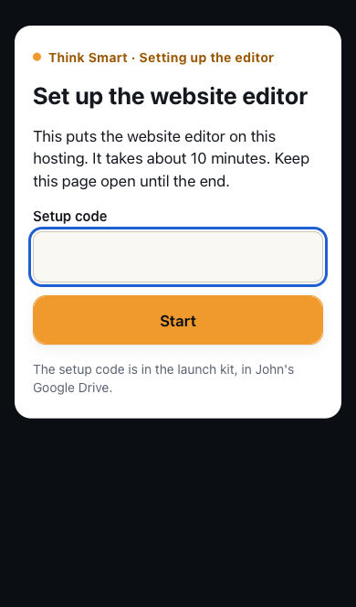
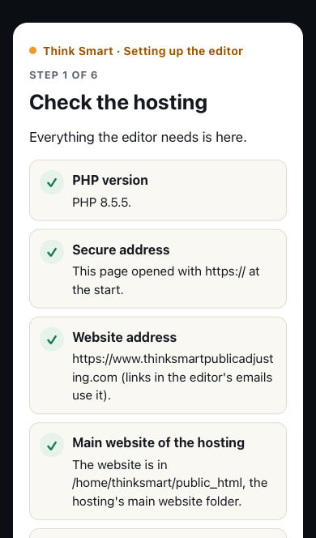
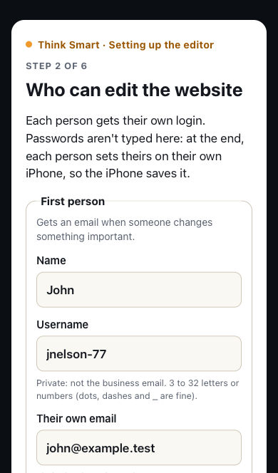
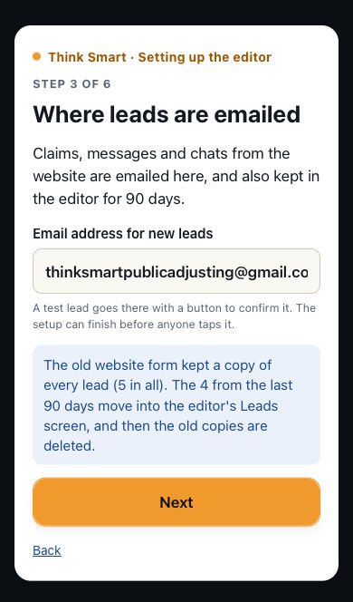
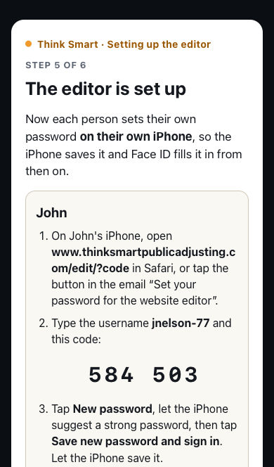
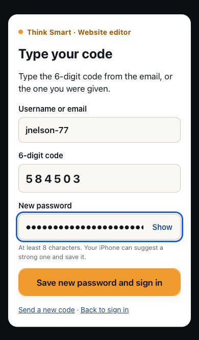
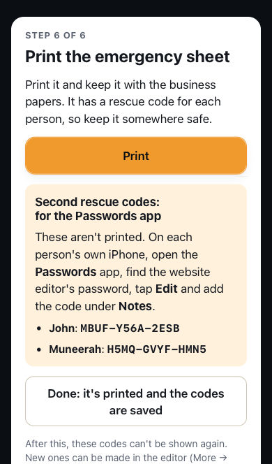

Think Smart Public Adjusting · launch kit
Putting the website and its editor on GoDaddy
For whoever sets it up, in this order. Step 6 is done together on a screen-share, with John and Muneerah clicking. You need the setup zip, the setup code (on the launch-kit checklist), the GoDaddy login, and John and Muneerah with their iPhones: about an hour, plus waiting for DNS.
-
Before anything else (can take days)
- The domain is at Wix and runs out on Dec 8, 2026: unlock it, transfer it into the GoDaddy account with the hosting, turn on auto-renew, pay years ahead. If that can't finish in time, renew at Wix first.
- A hosting plan with the security certificate (SSL) included for the whole term; pay the longest term.
- John owns the GoDaddy account and its 2-step phone, the domain, the lead Gmail's recovery settings and Adobe Sign.
-
Upload the website
- cPanel → File Manager →
public_html→ Upload the zip, then Extract it there. With "Show Hidden Files" on,.htaccessand.user.inimust be there. - The domain must be the account's primary domain (folder
public_html). If it isn't, ask GoDaddy. - cPanel → MultiPHP Manager → the newest PHP.
- cPanel → File Manager →
-
DNS and the certificate (at a quiet hour)
- Point the domain at the hosting (an A record to its IP and
wwwas a CNAME, or GoDaddy's nameservers). - cPanel → SSL/TLS Status → Run AutoSSL. The bare domain and
wwwmust both be covered: the old site told browsers to insist on https.
- Point the domain at the hosting (an A record to its IP and
-
The https redirect
In
public_html/.htaccess, remove the#from the four marked lines. Check both addresses and an old link such as/about. -
Email from the website
- cPanel → Email Accounts:
noreply@the domain, with a small quota. - DNS: SPF and DKIM (cPanel → Email Deliverability; the long DKIM record must be whole) and DMARC
v=DMARC1; p=none. - Send a test claim with photos. In Gmail, ⋮ → Show original: SPF and DKIM say PASS.
- cPanel → Email Accounts:
Set up the editor together: thinksmartpublicadjusting.com/edit/install







a. The setup code (capitals and dashes don't matter). b. Each red check says what to do (upload size: cPanel → MultiPHP INI Editor → upload_max_filesize 16M, post_max_size 20M); then make the private folder, which is tested from the web. c. John (gets the change alerts) and Muneerah: private usernames, not the business email, and their own emails. d. Leads go to thinksmartpublicadjusting@gmail.com; its test lead's Yes, send leads here can be tapped later. The old form's lead copies (90 days) move into the editor. e. Set it up; then each person, on their own iPhone, opens thinksmartpublicadjusting.com/edit/?code (or the button in their email), types the username and the 6-digit code, and lets the iPhone suggest and save a strong password. Check that Face ID fills it in, in Safari and from the Home Screen icon. f. Print the emergency sheet and save each person's second rescue code in their Passwords app (a note on the editor's password). Done closes the setup for good.
-
Hand over
- The emergency sheet goes with the business papers.
- John's Google Drive gets the launch kit: the zip, this guide, the checklist (with the setup code) and a copy of the website (editor → More → Download a copy).
- A Gmail filter for mail from
noreply@: never Spam, always important. If wanted, a free uptime alert to John's Gmail. - Walk Muneerah through the editor, screen-recorded into her camera roll.
-
Last tidy-up
- Retire the GitHub Pages staging copy and delete the Supabase project.
Reinstall and keep my content
If the website folder is ever hacked, broken or moved to another hosting: 1. Upload the launch-kit zip into public_html again and Extract it (overwrite). 2. The same day, open thinksmartpublicadjusting.com/edit/install/reinstall and type the setup code (John gets an email about it). 3. The same pages follow: the words, photos, contracts, logins, lead settings, History and leads are kept, the pages are rebuilt, and everyone signs in again (tick "Make new rescue codes" if the sheet may be lost).
For a developer: ~/thinksmart-private/README-developer.md explains how the hosting is laid out; it's also in every "Download a copy".